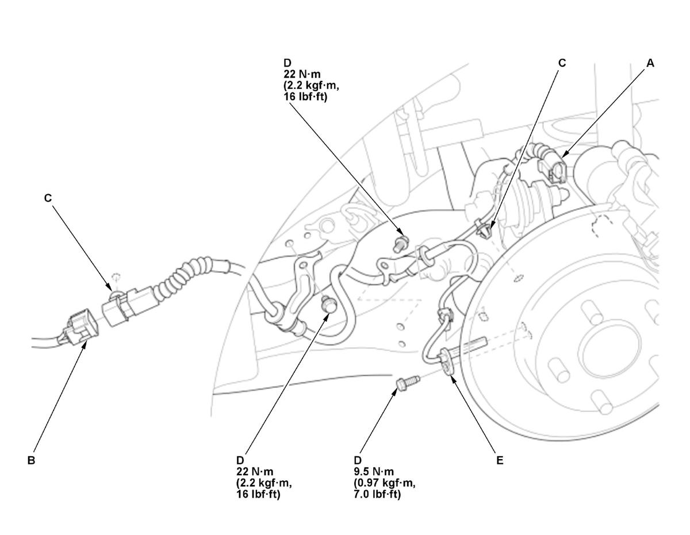

Removal and Installation
Front
- Vehicle - Lift
- Front Wheel - Remove
- Front Wheel Speed Sensor - Remove
1. Disconnect the connector (A).
2. Remove the wire guide rubbers (B), the clips (C), and the bolt (D).
3. Remove the wheel speed sensor (E).
- All Removed Parts - Install
1. Install the parts in the reverse order of removal, and note these items: - Install the sensor carefully to avoid twisting the wires.
- If the wheel speed sensor comes in contact with the wheel bearing, it is faulty.
- Make sure there is no debris in the sensor mounting hole.
Rear
- Vehicle - Lift
- Rear Wheel - Remove
- Rear Wheel Speed Sensor - Remove
1. Disconnect the connector (A).
NOTE: If the connector lock tab is difficult to release, push in on the connector body before pushing on the release lock.

Courtesy of HONDA, U.S.A., INC.2. Disconnect the connector (B).
3. Remove the clips (C), and the bolts (D).
4. Remove the wheel speed sensor (E).
- All Removed Parts - Install
1. Install the parts in the reverse order of removal, and note these items: - Install the sensor carefully to avoid twisting the wires.
- If the wheel speed sensor comes in contact with the hub bearing unit, it is faulty.
- Make sure there is no debris in the sensor mounting hole.